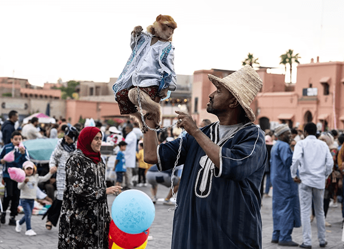
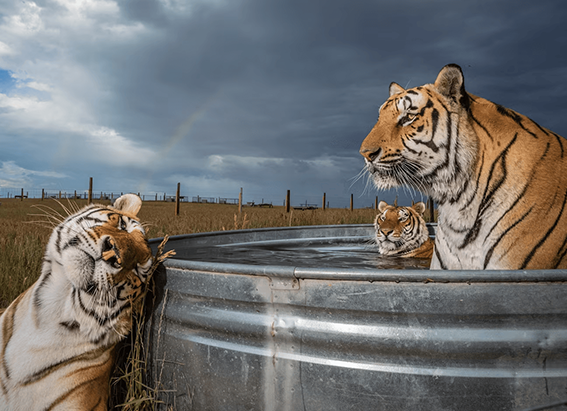
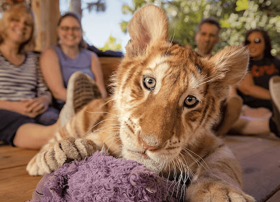

NATIONAL GEOGRAPHIC
Get Off the Tourist Track in Havana
TRAVEL
To get an inside glimpse of daily life for the average Cuban, you and your kids should skip the hotels and stay in one of the hundreds of casas particulares sprinkled throughout Havana, the Cuban equivalent of B&Bs and one of the few forms of private enterprise permitted by the country’s socialist government.
Besides costing a fraction of a hotel, staying inside the home of a Cuban family puts your family in the middle of a residential neighborhood, where you will awake to the sounds of daily life street vendors calling out pregones to advertise their wares, children playing ball in the street, and salsa music blasting from open windows.
“Staying with a family was critical to get the cultural rhythms,” says Mark Goehring, father of two who visited Havana with his children. “The kids got to see the day to day life and practice some of their Spanish with people who really cared for them.”
Also, staying in a home gives parents and kids alike a chance to hear the Cuban perspective on living in a socialist society.
“The owners of our particular casa were both born just after the revolution and we \often talked politics,” Goehring adds. “The kids learned about [revolutionary leader] Che Guevara from his often present image around town. We actually had a ‘Che-spotting’ game.”
Live like a Havanan outside the home by visiting the places Cubans take their own kids, like the Coppelia ice cream parlor; El Cinecito, a movie theater that exclusively screens films for kids; or La Colmenita, a children’s theater company housed in the Teatro Nacional.
Stroll the streets of Old Havana, and you will inevitably encounter strains of son the old style of Cuban music made famous by the group Buena Vista Social Club wafting down the colonial streets from bars and cafés where live bands play.
Music is at the heart of Cuba’s culture, and Cuba’s African heritage is at the core of its music. Unlike in North America, where drumming was often banned in slave communities, “in Cuba, the conditions existed for an explicitly African culture to flourish into the present day,” notes Ned Sublette, author of Cuba and Its Music (2004). “Maybe one of the most important lessons Cuba can teach a visiting child from the United States is the same lesson it can teach adults: the richness of Afro Cuban culture. In Cuba one quickly sees that there are other modes of black-white social relations than the ones North Americans have internalized.”
The best place to get an authentic taste of Afro-Cuban culture is at the weekly Sábado de Rumba (rumba Saturday) held in the shady patio of El Gran Palenque, home of the Conjunto Folklórico Nacional, the national folklore ensemble founded by the Cuban state in 1962. The show starts with a performance of the more traditional Afro-Cuban music and dance styles associated with Santeria, and ends with a high-energy rumba that gets foreigners and Cubans alike up and dancing. Kids will experience firsthand how Cubans like to have a good time.
Know Before You Go
Insider Tip: The Callejón de Hamel (callejón means “alleyway”) is equally famous for its colorful murals as it is for its Sunday afternoon rumba the quintessentially Cuban style of drumming and dancing born out of the fusion of Spanish and African roots. Once considered an authentic spot to experience its infectious rhythms, some complain that the weekly rumba has been tarnished by the effects of tourism. On Sundays, the narrow alleyway often gets impassibly crowded and the site is a hot spot for jineteros, the local term for Cubans who make a living hustling tourists. For a more pleasant experience, wander through the colorful passage on a weekday. Painted by neighborhood resident Salvador González, the funky alley is an open-air art installation paying homage to Afro-Cuban culture and religion.
Books for Parents: Cuba: After the Revolution by Bernard Wolf (1999): This photo essay presents a glimpse of daily life in contemporary Cuba, focusing on 12-year old Havana resident Ana Moreira and her family. The accompanying narrative gives an overview of the politics, economics, diversity, and social history of Cuba.
Movies: Viva Cuba (2007): This independent Cuban film tells the story of two children, best friends Malú and Jorgito. When they learn that Malú’s mother plans to leave Cuba and take Malú with her, the two run away together to the eastern side of the island. Winner of the Junior Prize at the Cannes Film Festival, Viva Cuba explores the issue of emigration from the literal point of view of the country’s children.
Comments :
- john Very good
- john Very good
Leave a Reply
Your email address will not be published. Required fields are marked*
Related posts:
-
These macaques are used for entertaining. They’re also endangered.
MARRAKECH, MOROCCOIn Jemaa el-Fnaa, the raucous main square in Marrakech, street merchants shout special prices for argan oil and wooden camel figurines. Smoke wafts from food stalls, and motorbikes
View article -
Inside our two year investigation of the captive tiger industry
Our two-year investigation into captive tigers in America sent us through 32 U.S. states with some truly disturbing experiences. But as the deadline for our National Geographic story loomed, I still needed a powerful, hopeful image.
View article -
How ‘Tiger King’ helped kill the industry it made famous
The Big Cat Public Safety Act which applies to lions, tigers, leopards, cheetahs, jaguars, cougars, or any hybrids of those species was signed into law today with the president’s signature.
View article